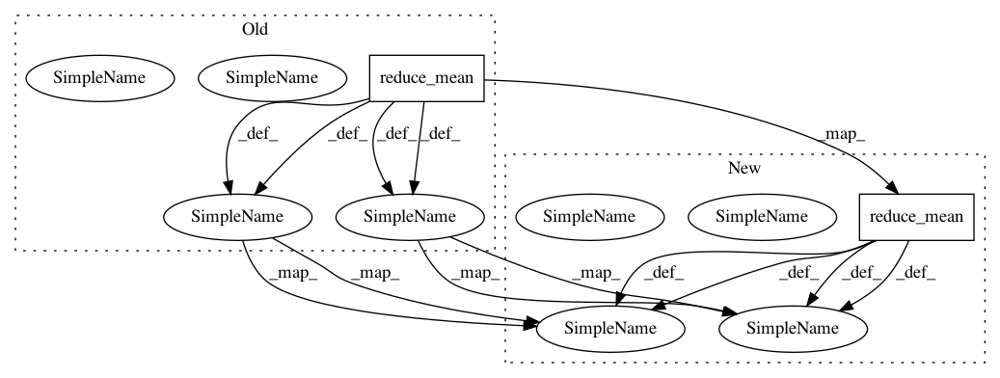

299280acd16069ad8da403d06abdc9b9eca0ef3e,yarll/agents/ppo/ppo.py,PPO,train,#PPO#,151
Before Change
new_log_prob = self.new_network.log_prob(actions_taken, new_logits)
old_log_prob = self.old_network.log_prob(actions_taken, old_logits)
mean_actor_loss = -tf.reduce_mean(self._actor_loss(old_log_prob, new_log_prob, advantages))
mean_critic_loss = tf.reduce_mean(self._critic_loss(returns, values))
loss = mean_actor_loss + self.config["vf_coef"] * mean_critic_loss - \
self.config["entropy_coef"] * tf.reduce_mean(self.new_network.entropy(new_logits))
gradients = tape.gradient(loss, self.new_network.trainable_weights)
self.optimizer.apply_gradients(zip(gradients, self.new_network.trainable_weights))
return mean_actor_loss, mean_critic_loss, loss, tf.linalg.global_norm(gradients), old_log_prob, new_log_prob, new_logits
After Change
new_log_prob = self.new_network.log_prob(actions_taken, new_logits)
old_log_prob = self.old_network.log_prob(actions_taken, old_logits)
mean_actor_loss = -tf.reduce_mean(self._actor_loss(old_log_prob, new_log_prob, advantages))
mean_critic_loss = .5 * tf.reduce_mean(self._critic_loss(returns, values))
loss = mean_actor_loss + self.config["vf_coef"] * mean_critic_loss - \
self.config["entropy_coef"] * tf.reduce_mean(self.new_network.entropy(new_logits))
gradients = tape.gradient(loss, self.new_network.trainable_weights)
self.optimizer.apply_gradients(zip(gradients, self.new_network.trainable_weights))
return mean_actor_loss, mean_critic_loss, loss, tf.linalg.global_norm(gradients), old_log_prob, new_log_prob, new_logits
In pattern: SUPERPATTERN
Frequency: 4
Non-data size: 2
Instances
Project Name: arnomoonens/yarll
Commit Name: 299280acd16069ad8da403d06abdc9b9eca0ef3e
Time: 2020-01-14
Author: arno.moonens@gmail.com
File Name: yarll/agents/ppo/ppo.py
Class Name: PPO
Method Name: train
Project Name: zsdonghao/text-to-image
Commit Name: 664b64722c85374b0d4a971f7e35c8bdab39ec91
Time: 2017-02-03
Author: dhsig552@163.com
File Name: train_uim2im.py
Class Name:
Method Name: main_train_imageEncoder
Project Name: chris-chris/pysc2-examples
Commit Name: 48d178cfbb60e5b0004f63b2eca37b2449bb6c67
Time: 2017-10-31
Author: sjhshy@gmail.com
File Name: a2c/a2c.py
Class Name: Model
Method Name: __init__
Project Name: pymanopt/pymanopt
Commit Name: 7a23a64585d61ffa74c02dc8ad69274b9a4ef08a
Time: 2020-01-26
Author: niklas.koep@gmail.com
File Name: examples/regression_offset_tensorflow.py
Class Name:
Method Name: